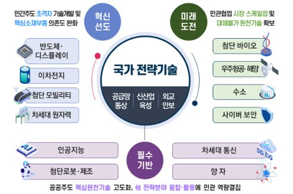

[Completed] A Study on Rational Support Measures for Promoting Artificial Intelligence Research, Development, and Investment
인공지능 연구개발, 투자 촉진을 위한 합리적 지원 방안 검토
Principal Investigator / 2025.05.01 ~ 2025.09.30 / Ministry of Economy and Finance (KRW 50 million)
Funding: Ministry of Economy and Finance (KRW 50 million)
Period: 2025.05. ~ 2025.09.
This research aims to upgrade Korea's R&D and facility investment tax credit system for artificial intelligence to international standards within the framework of the Restriction of Special Taxation Act, in response to the rapid emergence of advanced AI technologies such as Generative AI and Agentic AI, and intensifying global tax policy competition. The current Korean system classifies AI under on ly five broad technology groups, failing to reflect emerging technologies and creating interpretive uncertainty in tax credit application. The study conducts ① comparative analysis of international tax incentive systems including the U.S. CHIPS Act, R&D Tax Credit, and China's High and New Technology Enterprise (HNTE) certification, ② quantitative diagnosis of Korea's AI capability using global benchmarks such as the Stanford AI Index, ③ inter-ministerial consultation with the Ministry of Economy and Finance, the Ministry of Science and ICT, and the Ministry of Trade, Industry and Energy to derive an integrated technology classification, and ④ expert validation by AI faculty members to verify technical adequacy. The final outcomes systematically designate AI sub-technologies and commercialization facilities under both National Strategic Technologies and New Growth and Source Technologies, providing a foundation that enhances tax authorities' review efficiency, reduces corporate compliance uncertainty, and strengthens national competitiveness in AI.
한국어
인공지능 연구개발·투자 촉진을 위한 합리적 지원 방안 검토 (A Study on Rational Support Measures for Promoting Artificial Intelligence Research, Development, and Investment)
본 연구는 생성형 AI(Generative AI), 에이전트 AI(Agentic AI) 등 첨단 인공지능 기술의 급속한 발전과 미국·중국 등 기술 선도국의 세제 정책 경쟁이 심화되는 환경에서, 「조세특례제한법」상 국가전략기술 및 신성장·원천기술 범주 내 인공지능 기술의 연구개발(R&D) 및 시설투자 세액공제 체계를 국제 수준으로 고도화하는 것을 목적으로 합니다. 현행 제도는 인공지능을 학습·추론, 언어이해, 시각이해 등 5개 기술군에 포괄적으로 한정하고 있어 생성형 AI·에이전트 AI 등 신흥 기술이 반영되지 못하고 세액공제 적용 시 해석상 불확실성을 초래하고 있습니다. 이에 본 연구는 ① 미국 CHIPS Act·R&D Tax Credit, 중국 고신기술기업(HNTE) 인증 등 해외 주요국 세제지원 제도 비교 분석, ② Stanford AI Index 등 국제 지표를 활용한 한국의 인공지능 기술 수준 진단, ③ 기획재정부 및 과학기술정보통신부·산업통상자원부 등 유관 부처와의 협의를 통한 범부처 통합 기술군 도출, ④ 인공지능 분야 학계 전문가 자문을 통한 기술적 타당성 검증을 수행합니다. 최종적으로 국가전략기술 및 신성장·원천기술 분야의 인공지능 세부기술과 사업화시설을 체계적으로 선정함으로써, 세무당국의 심사 효율성 제고와 기업의 인공지능 투자 촉진을 동시에 달성할 수 있는 제도적 기반을 마련합니다.
